VlnPlot的ggplot改造
原文：https://mp.weixin.qq.com/s?__biz=MzAwMzIzOTk5OQ==&mid=2247504843&idx=1&sn=b795a3e36ae092d8f87abb5a87187828&chksm=9b3caa9bac4b238dd33e905c33924b58aa4ff14e83abbf08046fba7fe765ecb0204163cb6acf#rd 合集：单细胞教程全收录

写在前面
 随着我们课程的持续深入，以及各位小伙伴分析技能的日益提升，目前很多同学已经不满足于Seurat的可视化功能并希望能够做出一些改进的可视化 。我个人对可视化的方式改进其实并不感冒，画图嘛，跟翻译一样信达雅 即可，没必要盲目追求视觉效果。不过这也并不方案我给大家做这类的教程。我们准备出一系列单细胞测图片改造计划 的推送，大家如果有任何关于可视化的想法，也可以通过文末客服微信联系我们。
本次推送我们进行VlnPlot的ggplot2改造，主要内容有堆积柱状图、坐标轴更改、海盗船图、箱线图、蜂群图、直方图等，主要结果图片可参考：
随着我们课程的持续深入，以及各位小伙伴分析技能的日益提升，目前很多同学已经不满足于Seurat的可视化功能并希望能够做出一些改进的可视化 。我个人对可视化的方式改进其实并不感冒，画图嘛，跟翻译一样信达雅 即可，没必要盲目追求视觉效果。不过这也并不方案我给大家做这类的教程。我们准备出一系列单细胞测图片改造计划 的推送，大家如果有任何关于可视化的想法，也可以通过文末客服微信联系我们。
本次推送我们进行VlnPlot的ggplot2改造，主要内容有堆积柱状图、坐标轴更改、海盗船图、箱线图、蜂群图、直方图等，主要结果图片可参考：
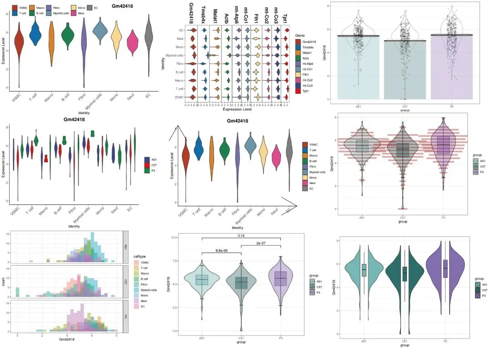
测试文件及可复制学习手册可在文末解锁或添加客服微信Biomamba_kefu 获取：
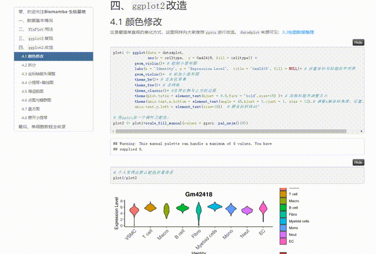
视频教程
B站同步播出，连播更方便，文末阅读原文可直达：https://www.bilibili.com/video/BV1iM4y127Ez?p=7
图文教程
三 绘图数据整理
ggplot2的图片绘制需要一个长格式的数据，我们以上面的高表达基因为例，整理出一个长格式数据框:
3.1 VlnPlot数据整理
library(Seurat)
scRNA <- readRDS('pbmcrenamed.rds')
# 取出表达矩阵：
data4plot <- scRNA@assays$RNA@data[he_gene[1:5],] %>% as.data.frame() %>% t()
# 添加注释信息：
data4plot <- cbind(data4plot,scRNA@meta.data[,c('group','celltype')])
# 查看一下表头：
head(data4plot)
## Gm42418 Tmsb4x Malat1 Actb mt-Atp6 group
## AAAGGGCTCGCAGAGA-1_1 3.125663 5.191950 5.443660 4.880147 4.500693 C57
## AACACACAGCATCCCG-1_1 5.717602 4.747414 4.719490 4.166542 5.093166 C57
## AACAGGGTCAACACCA-1_1 4.716741 4.179333 5.849399 3.356926 3.870171 C57
## AACCCAAAGGCCTTGC-1_1 5.104691 3.290715 6.404316 4.364196 3.569047 C57
## AACCCAAAGTGGACGT-1_1 5.853611 7.403626 3.399781 5.316662 3.897164 C57
## AACCCAAGTCCGAAGA-1_1 4.562551 6.145295 4.913077 5.337041 3.646919 C57
## celltype
## AAAGGGCTCGCAGAGA-1_1 VSMC
## AACACACAGCATCCCG-1_1 T cell
## AACAGGGTCAACACCA-1_1 Fibro
## AACCCAAAGGCCTTGC-1_1 EC
## AACCCAAAGTGGACGT-1_1 Myeloid cells
## AACCCAAGTCCGAAGA-1_1 T cell
3.2 堆积小提琴图数据整理
# 整理数据
library(reshape2)
data4stack <- as.data.frame(scRNA[["RNA"]]@data[he_gene,])
data4stack$Gene <- factor(he_gene,levels = he_gene)
data4stack[1:4,1:4]
## AAAGGGCTCGCAGAGA-1_1 AACACACAGCATCCCG-1_1 AACAGGGTCAACACCA-1_1
## Gm42418 3.125663 5.717602 4.716741
## Tmsb4x 5.191950 4.747414 4.179333
## Malat1 5.443660 4.719490 5.849399
## Actb 4.880147 4.166542 3.356926
## AACCCAAAGGCCTTGC-1_1
## Gm42418 5.104691
## Tmsb4x 3.290715
## Malat1 6.404316
## Actb 4.364196
# 把宽格式的数据转换为长格式数据
data4stack <- melt(data4stack,id="Gene")
head(data4stack)
## Gene variable value
## 1 Gm42418 AAAGGGCTCGCAGAGA-1_1 3.125663
## 2 Tmsb4x AAAGGGCTCGCAGAGA-1_1 5.191950
## 3 Malat1 AAAGGGCTCGCAGAGA-1_1 5.443660
## 4 Actb AAAGGGCTCGCAGAGA-1_1 4.880147
## 5 mt-Atp6 AAAGGGCTCGCAGAGA-1_1 4.500693
## 6 mt-Co1 AAAGGGCTCGCAGAGA-1_1 4.223976
colnames(data4stack)[c(2,3)]=c("Cell","Expression")
my_meta=scRNA@meta.data[,c('group','celltype')]
my_meta$Cell <- rownames(my_meta)
data4stack=inner_join(data4stack,my_meta,by="Cell")
# 瞅一眼数据
head(data4stack)
## Gene Cell Expression group celltype
## 1 Gm42418 AAAGGGCTCGCAGAGA-1_1 3.125663 C57 VSMC
## 2 Tmsb4x AAAGGGCTCGCAGAGA-1_1 5.191950 C57 VSMC
## 3 Malat1 AAAGGGCTCGCAGAGA-1_1 5.443660 C57 VSMC
## 4 Actb AAAGGGCTCGCAGAGA-1_1 4.880147 C57 VSMC
## 5 mt-Atp6 AAAGGGCTCGCAGAGA-1_1 4.500693 C57 VSMC
## 6 mt-Co1 AAAGGGCTCGCAGAGA-1_1 4.223976 C57 VSMC
四、ggplot2改造
4.1 颜色修改
这是最简单直观的美化方式，这里同样向大家推荐ggsci进行改造。data4plot来源可见：3.2绘图数据整理
plot1 <- ggplot(data = data4plot,
aes(x = celltype, y = Gm42418, fill = celltype)) +
geom_violin()+ # 绘制小提琴图
labs(x = 'Identity', y = 'Expression Level', title = 'Gm42418', fill = NULL)+ # 设置坐标与标题的字符串
geom_violin()+ # 添加小提琴图
theme_bw()+ # 去灰色背景
theme_few()+ # 去网格
theme_classic()+ #去掉右侧与上方的边框
theme(plot.title = element_text(hjust = 0.5,face = 'bold',size=15) )+ # 加粗标题并调整大小
theme(axis.text.x.bottom = element_text(angle = 45,hjust = 1,vjust = 1, size = 12),# 调整x轴坐标角度、位置、大小
axis.text.y.left = element_text(size=10)) # 横坐标斜体45°
# 用ggsci加一个柳叶刀配色：
plot2 <- plot1+scale_fill_manual(values = ggsci::pal_nejm()(9))
## Warning: This manual palette can handle a maximum of 8 values. You have
## supplied 9.
# 个人觉得比默认配色好看很多
plot1/plot2
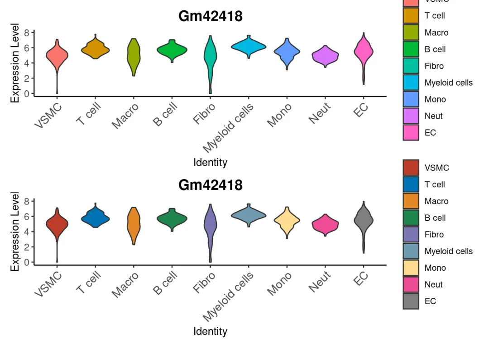
# 如果觉得图注多余，可以隐藏：
plot2+theme(legend.position = "none")
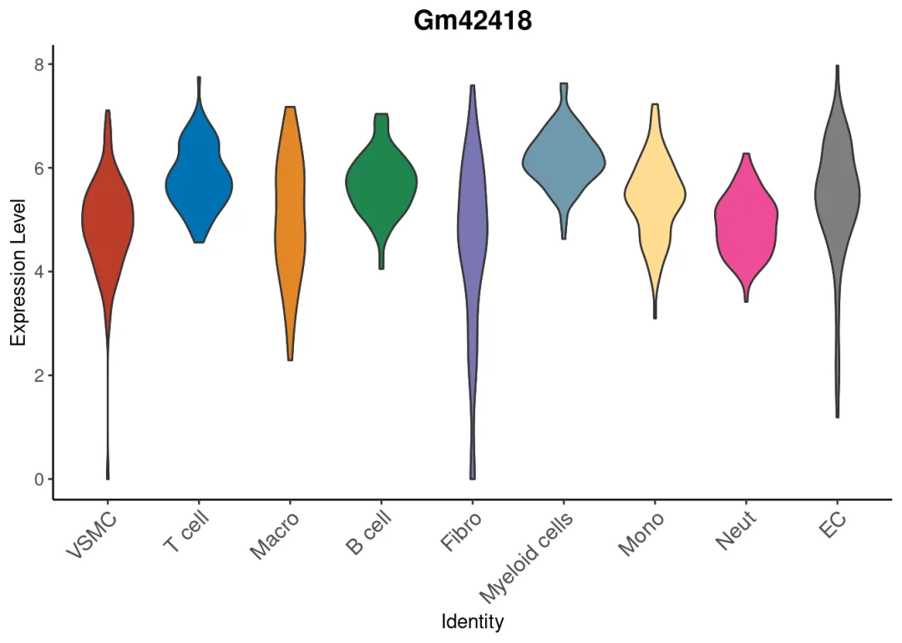
# 或者自定义图注的位置：
plot2+theme(legend.position = c(-0.05,-0.05)# 相对位置，整张图为c(1,1)
)
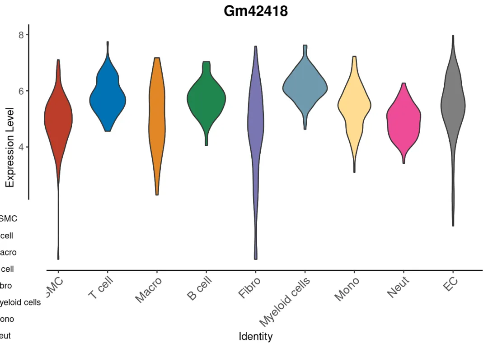
# 调整的舒服一些
plot2+theme(legend.position = c(0.3,1),# 相对位置，整张图为c(1,1)
legend.background = element_blank(),# 让图注背景框透明
legend.direction = 'horizontal',# 调整图例摆放方向
plot.title = element_text(hjust = 0.8,face = 'bold',size=15)# 调整标题位置、字体、大小
)
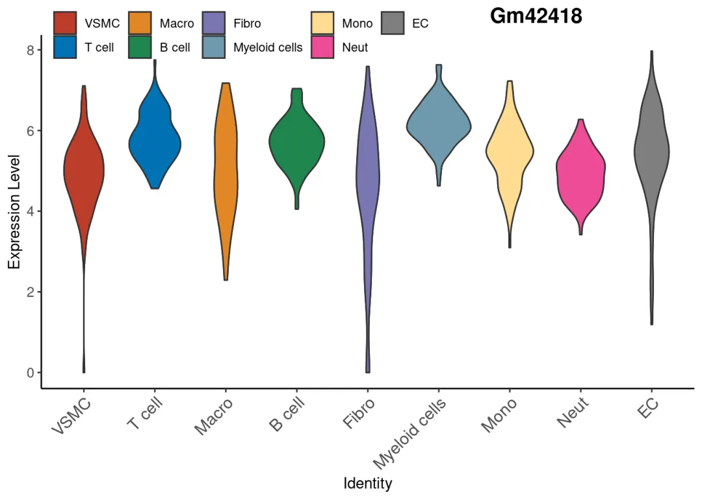
stack VlnPlot更改颜色：
copy_stack <- ggplot(data4stack, aes(x = Expression, y = celltype, fill = Gene)) +
geom_violin() +
labs(x = "Expression Level", y = "Identity") +
facet_grid(.~Gene, scales = "free_x",space = 'free_x')+ # 按照基因拆分做stack，并使每个小提琴图的坐标按照真实极值生成，而非全部统一
theme_bw()+ # 去灰色背景
theme_few()+ # 去网格
theme(panel.spacing.x = unit(0, "cm"))+# 去间隙
theme(strip.background = element_blank(), # 去Gene标题的背景
strip.text.x = element_text(angle = -90, hjust = 1,size=15,face='bold') # 旋转Gene标题的角度
)
# 添加ggsci配色
copy_stack+scale_fill_manual(values = c(ggsci::pal_nejm()(8),ggsci::pal_aaas()(2)))
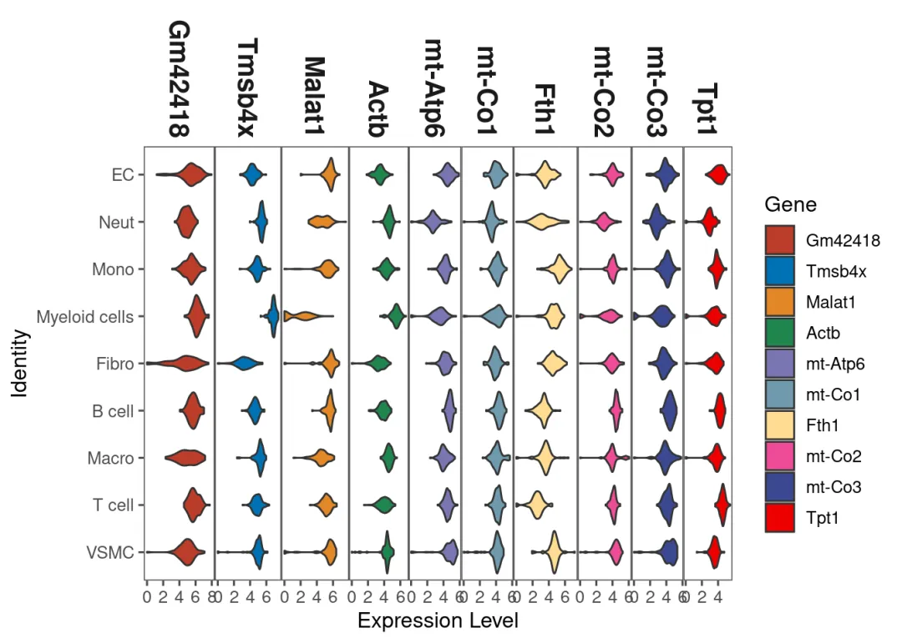
# 把颜色填充由Gene改为Celltype：
copy_stack <- ggplot(data4stack, aes(x = Expression, y = celltype, fill = celltype))+ # 改动fill即可
geom_violin() +
labs(x = "Expression Level", y = "Identity") +
facet_grid(.~Gene, scales = "free_x",space = 'free_x')+ # 按照基因拆分做stack，并使每个小提琴图的坐标按照真实极值生成，而非全部统一
theme_bw()+ # 去灰色背景
theme_few()+ # 去网格
theme(panel.spacing.x = unit(0, "cm"))+# 去间隙
theme(strip.background = element_blank(), # 去Gene标题的背景
strip.text.x = element_text(angle = -90, hjust = 1,size=15,face='bold') # 旋转Gene标题的角度
)
copy_stack+scale_fill_manual(values = c(ggsci::pal_nejm()(8),ggsci::pal_aaas()(2)))
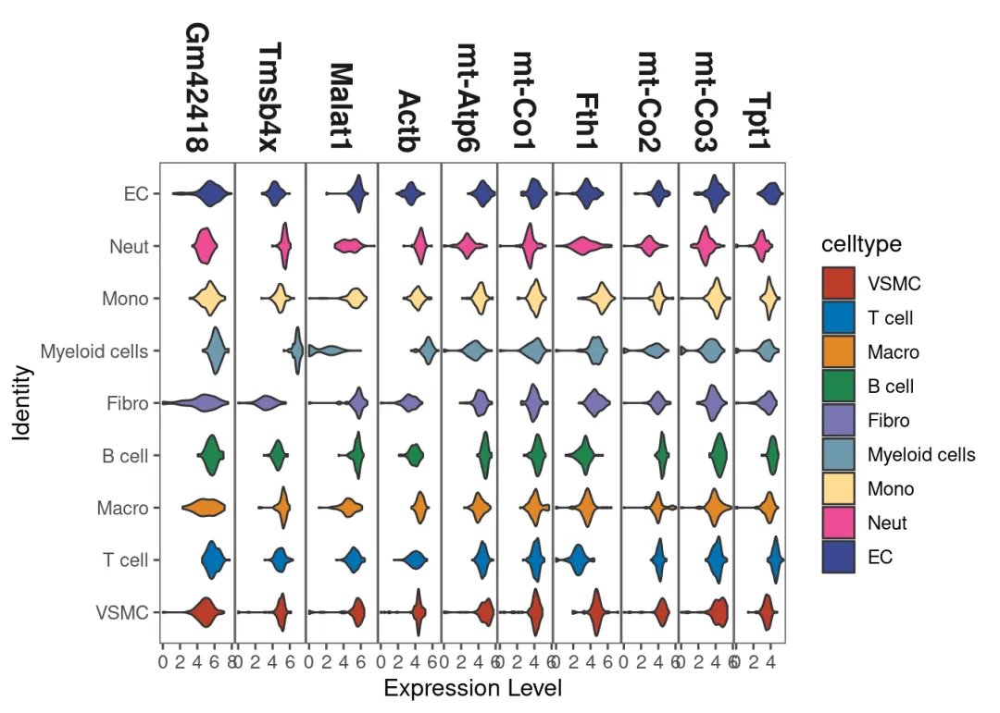
# 交换x/y轴
copy_stack <- ggplot(data4stack, aes(x = celltype, y = Expression , fill = Gene)) +
geom_violin() +
labs(x = "Expression Level", y = "Identity") +
facet_grid(Gene~., scales = "free_y",space = 'free_y')+ #这一步也需要调整
theme_bw()+ # 去灰色背景
theme_few()+ # 去网格
theme(panel.spacing.x = unit(0, "cm"))+# 去间隙
theme(strip.background = element_blank(), # 去Gene标题的背景
strip.text.x = element_text(angle = -90, hjust = 1,size=15,face='bold') # 旋转Gene标题的角度
)
copy_stack
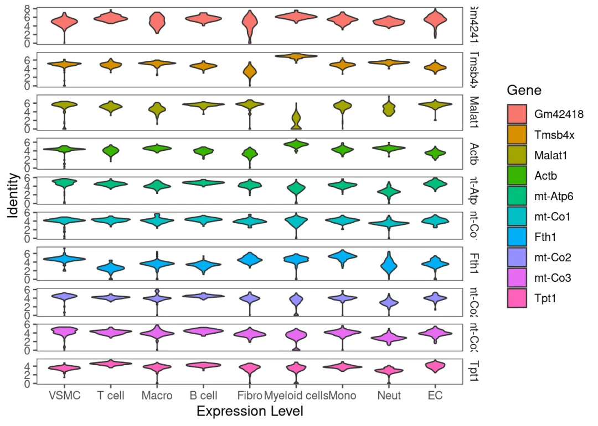
4.2 拆分
VlnPlot中能够做到按照一定的分类变量拆分 小提琴，我们同样可以在ggplot2中重现这一过程
# VlnPlot中的重现：
VlnPlot(scRNA,features = he_gene[1],split.by = 'group')
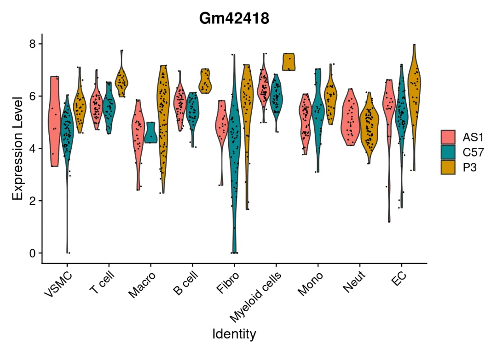
# 用ggplot拆一下：
ggplot(data = data4plot, aes(x = celltype, y = Gm42418, fill = group))+ # 同样是更改fill来实现
geom_violin()+ # 绘制小提琴图
labs(x = 'Identity', y = 'Expression Level', title = 'Gm42418', fill = NULL)+ # 设置坐标与标题的字符串
geom_violin()+ # 添加小提琴图
theme_bw()+ # 去灰色背景
theme_few()+ # 去网格
theme_classic()+ #去掉右侧与上方的边框
theme(plot.title = element_text(hjust = 0.5,face = 'bold',size=15) )+ # 加粗标题并调整大小
theme(axis.text.x.bottom = element_text(angle = 45,hjust = 1,vjust = 1, size = 12),
axis.text.y.left = element_text(size=10)) # 横坐标斜体45°
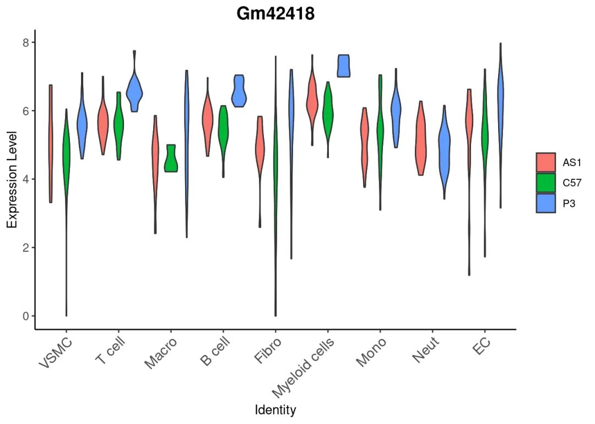
# 此时需要自定义颜色应该输入group对应的三个颜色
ggplot(data = data4plot, aes(x = celltype, y = Gm42418, fill = group)) +
geom_violin()+ # 绘制小提琴图
labs(x = 'Identity', y = 'Expression Level', title = 'Gm42418', fill = NULL)+ # 设置坐标与标题的字符串
geom_violin()+ # 添加小提琴图
theme_bw()+ # 去灰色背景
theme_few()+ # 去网格
theme_classic()+ #去掉右侧与上方的边框
theme(plot.title = element_text(hjust = 0.5,face = 'bold',size=15) )+ # 加粗标题并调整大小
theme(axis.text.x.bottom = element_text(angle = 45,hjust = 1,vjust = 1, size = 12),
axis.text.y.left = element_text(size=10)) + # 横坐标斜体45°
scale_fill_manual(values = ggsci::pal_aaas()(3))
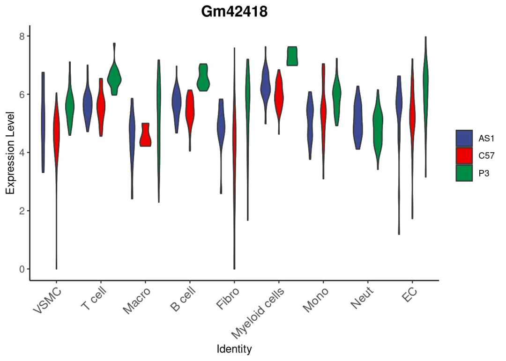